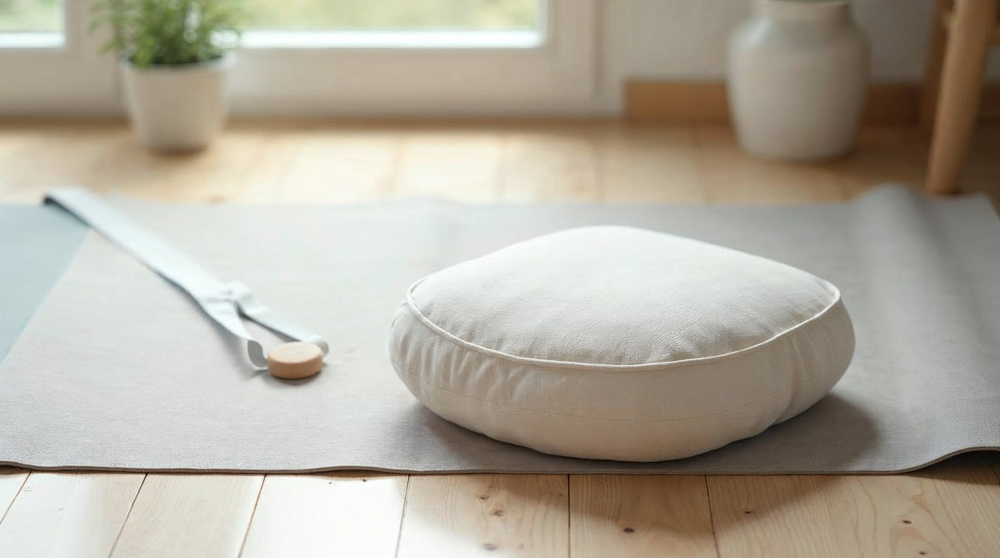
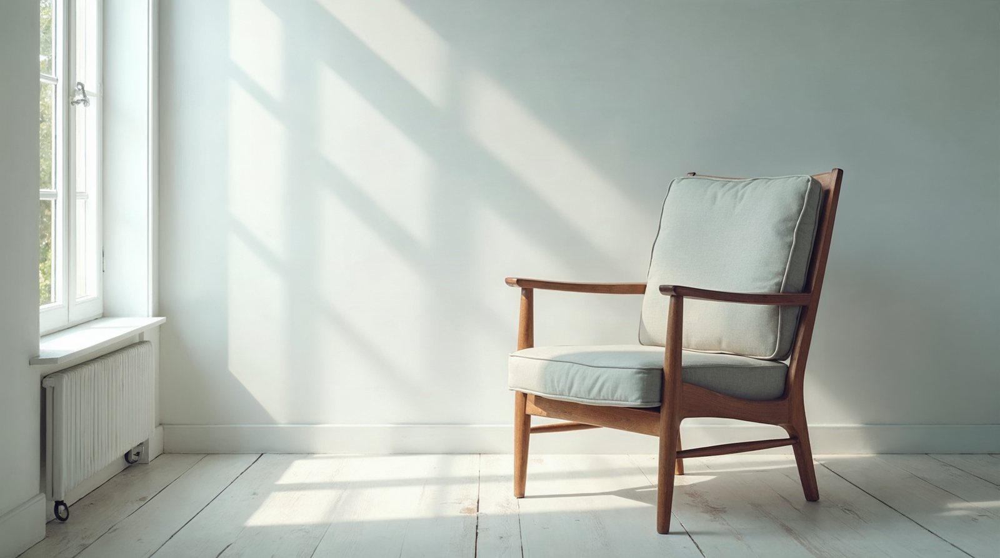
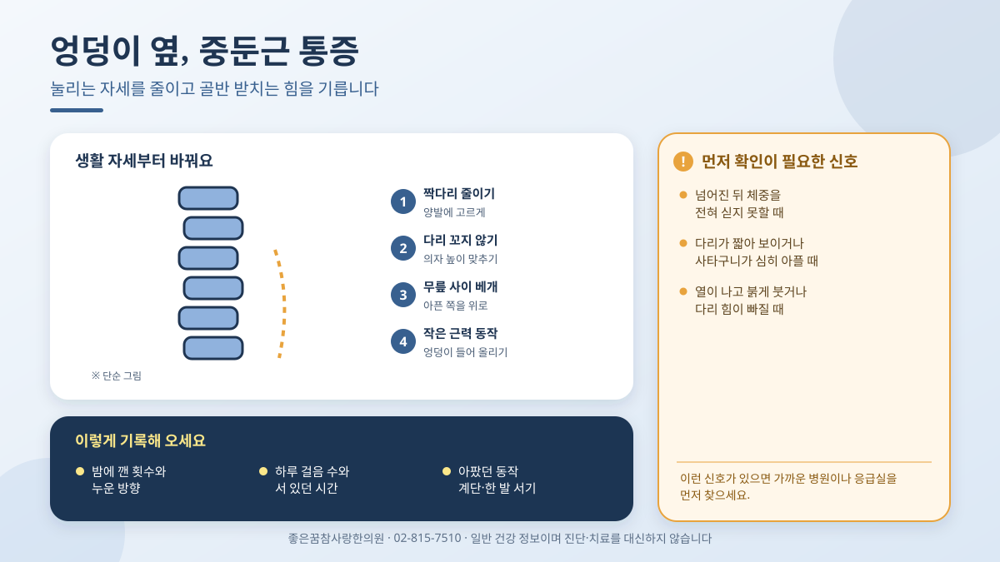

이종호 한의사 감수좋은꿈참사랑한의원 대표원장 (한의사 면허번호 19769)발행 2026-11-26 · 수정 2026-11-27
이 글의 차례
밤에 옆으로 누우면 엉덩이 바깥쪽이 눌려서 몇 번이고 돌아눕게 되죠. 아침엔 괜찮다가 오후가 되면 엉덩이 옆이 뻐근해지고, 계단을 오를 때나 한쪽 다리로 서서 바지를 입을 때 그 자리가 시큰합니다. 허리가 아픈가 싶어 허리를 두드려 보시는데, 손이 가는 자리는 허리보다 조금 더 옆쪽 아래예요.
이런 분들의 엉덩이 옆을 짚어 보면 골반 뼈 바로 아래, 바지 옆 솔기 근처가 유난히 예민한 경우가 많아요. 이 자리에 있는 근육이 중둔근이에요. 이름은 낯설어도, 걷고 서는 매 순간 쉬지 않고 일하는 근육이거든요.
진료실에 오시는 분들은 대개 허리 디스크나 고관절 문제를 먼저 걱정하세요. 그럴 만해요. 이 셋은 아픈 자리가 가까워서 헷갈리기 쉽거든요. 그래서 저는 '어디가 아픈지'와 '어떤 자세에서 아픈지'를 둘로 나눠서 여쭤요. 자리는 비슷해도 아픈 자세는 꽤 다르게 나오는 경우가 많습니다.
중둔근 통증은 나이와 상관없이 생겨요. 달리기를 늘린 젊은 분, 아기를 한쪽 골반에 걸쳐 안는 부모님, 오래 서서 일하는 분, 다리를 꼬고 앉는 습관이 있는 분, 갱년기 전후 여성분에게서 자주 듣는 이야기예요. 몸을 한쪽으로 기대 쓰는 날이 쌓이면 원래 그렇게 지치기 쉬운 근육이에요.

중둔근은 어떤 일을 하나요
중둔근은 골반 옆면에서 시작해 허벅지뼈 바깥쪽 툭 튀어나온 자리에 붙는 부채꼴 모양의 근육입니다. 엉덩이 근육 가운데 가장 큰 대둔근보다 조금 위, 옆쪽에 있습니다. 다리를 옆으로 벌리는 일을 하지만, 그보다 더 중요한 일은 한 발로 설 때 골반을 수평으로 붙잡아 주는 것입니다.
걷는 동안 우리는 매 걸음마다 잠깐씩 한 발로 섭니다. 이때 디딘 쪽 중둔근이 힘을 내지 않으면 반대쪽 골반이 아래로 처지고 몸이 좌우로 흔들립니다. 그래서 중둔근은 하루 수천 걸음마다 쉬지 않고 일하는 근육입니다.
이 근육이 약해지거나 지치면 골반이 흔들리는 것을 허리와 무릎, 허벅지 바깥쪽이 대신 붙잡으려 하면서 다른 곳까지 부담이 번집니다. 엉덩이 옆 통증과 함께 무릎 바깥쪽이나 허리가 같이 불편하다는 분이 많은 이유입니다.
왜 중둔근이 아파질까요
가장 흔한 이유는 한쪽으로 쏠린 자세입니다. 서 있을 때 한쪽 다리에만 체중을 싣고 골반을 옆으로 빼는 짝다리, 아기를 한쪽 골반에 걸쳐 안는 자세, 다리를 꼬고 오래 앉는 습관은 중둔근과 그 힘줄을 늘어난 상태로 오래 눌러 둡니다.
운동량의 변화도 영향을 줍니다. 달리기나 등산, 계단 오르기를 짧은 기간에 크게 늘리면 중둔근이 적응하기 전에 지칩니다. 반대로 오래 앉아 지내 근육이 약해진 상태에서 갑자기 많이 걸어도 같은 일이 생깁니다.
옆으로 누워 자는 습관도 관련이 있습니다. 아픈 쪽을 아래로 누우면 힘줄이 뼈에 직접 눌리고, 위로 누우면 다리가 앞으로 떨어지며 힘줄이 늘어납니다. 그래서 밤에 아파서 깨는 일이 흔합니다.
나이와 호르몬 변화도 함께 봅니다. 갱년기 전후 여성분은 힘줄이 쉽게 예민해지는 시기라 같은 생활에도 엉덩이 옆 통증을 더 자주 겪습니다. 체중이 늘어난 시기에도 매 걸음 중둔근이 버텨야 하는 무게가 커집니다.
허리나 고관절 통증과는 어떻게 다른가요?
엉덩이 옆 통증은 아픈 자리와 아픈 자세로 나눠 보면 이해가 쉽습니다. 아래는 진료실에서 흔히 나눠 보는 기준입니다.
- 중둔근·힘줄: 허벅지 바깥 툭 튀어나온 뼈 주변을 누르면 아프고, 옆으로 누울 때와 한 발로 설 때 아픔
- 허리에서 내려오는 통증: 허리를 굽히거나 젖힐 때 함께 아프고, 다리 뒤나 옆으로 저림이 내려감
- 고관절: 사타구니 깊은 곳이 아프고, 양말 신기나 다리를 안으로 돌리기가 어려움
- 엉덩이 뒤 깊은 통증: 오래 앉아 있을 때 엉덩이 가운데가 아프고 다리로 저림이 번짐
두 가지 이상이 함께 있는 경우도 흔합니다. 허리가 불편해 걸음이 바뀌면서 중둔근이 지치기도 하고, 고관절이 뻣뻣해 엉덩이 옆이 대신 일하기도 합니다. 그래서 엉덩이만이 아니라 허리와 고관절, 무릎까지 함께 살핍니다.
집에서 먼저 살펴볼 수 있는 것
거울 앞에 서서 한 발로 30초 정도 서 보세요. 반대쪽 골반이 아래로 처지거나, 몸이 디딘 쪽으로 크게 기울어진다면 그쪽 중둔근이 지쳐 있을 수 있습니다. 양쪽을 번갈아 비교해 보시면 차이가 더 잘 보이고, 휴대폰으로 짧게 영상을 찍어 두시면 진료 때 함께 볼 수 있습니다.
옆으로 누워 위쪽 다리를 무릎을 편 채 천천히 들어 올려 보세요. 들어 올리는 동안 엉덩이 옆이 아프거나, 다리가 앞으로 빠지며 버티기 어렵다면 진료 때 말씀해 주세요.
허리를 앞으로 굽히고 뒤로 젖혀 보며 엉덩이 옆 통증이 함께 변하는지도 확인합니다. 허리 움직임에 따라 엉덩이 옆이나 다리 저림이 크게 달라진다면 허리 쪽을 함께 살펴봐야 합니다.
중둔근 통증을 두고 자주 헷갈리는 것
첫째, 엉덩이가 아프니 많이 늘여야 한다는 생각입니다. 힘줄이 예민한 시기에 다리를 꼬아 엉덩이 옆을 세게 늘이면 힘줄이 뼈에 더 눌려 오히려 아플 수 있습니다. 늘이기보다 눌리는 자세를 줄이는 것이 먼저인 경우가 많습니다.
둘째, 폼롤러로 세게 문지르면 풀린다는 생각입니다. 근육이 뭉친 느낌에는 도움이 될 수 있지만, 힘줄이 예민한 자리를 체중을 실어 세게 문지르면 통증이 커질 수 있습니다. 가볍게, 아픈 자리 위아래 근육 위주로 하시길 권합니다.
셋째, 허리 디스크라고 단정하는 생각입니다. 엉덩이 옆 통증의 상당수는 허리보다 엉덩이 옆 힘줄과 근육에서 옵니다. 반대로 허리 문제가 섞여 있는 경우도 있으니, 진찰로 나눠 보는 것이 좋습니다.

생활 속 자세는 어떻게 바꾸면 좋을까요
서 있을 때는 양발에 체중을 고르게 싣고, 한쪽 골반을 옆으로 빼는 짝다리를 줄입니다. 설거지나 줄 서기처럼 오래 서 있을 때는 발을 어깨너비로 두고, 한쪽 발을 낮은 받침에 번갈아 올려 두는 것도 방법입니다.
앉을 때는 다리를 꼬지 않고, 무릎이 엉덩이보다 너무 높지 않은 의자를 고릅니다. 낮은 소파에 깊이 앉으면 일어날 때 엉덩이 옆에 부담이 커지니 쿠션으로 높이를 맞춰 보세요.
잘 때는 되도록 아픈 쪽을 위로 하고 누우면서 두 무릎 사이에 베개를 끼워 위쪽 다리가 앞으로 떨어지지 않게 합니다. 등을 대고 눕는 것이 편하다면 무릎 아래에 베개를 받쳐 보세요.
아기를 안을 때는 한쪽 골반에 걸치기보다 몸 앞쪽 가운데로 안거나, 양쪽을 번갈아 안습니다. 무거운 가방은 한쪽 어깨보다 양쪽으로 메는 배낭이 골반의 균형에 편합니다.
달리기나 등산을 하는 분이라면
달리는 동안에는 걸을 때보다 몇 배의 힘으로 한 발 착지를 반복합니다. 중둔근이 지치면 착지할 때마다 무릎이 안쪽으로 모이고 골반이 흔들리는데, 이 모습이 쌓이면 엉덩이 옆뿐 아니라 무릎 바깥쪽과 앞쪽까지 불편해질 수 있습니다.
등산에서는 오르막보다 내리막에서 골반을 붙잡는 일이 더 커집니다. 스틱을 쓰면 체중이 나뉘어 엉덩이 옆 부담을 덜 수 있습니다. 운동을 다시 늘릴 때는 거리보다 한 발로 서서 무릎을 살짝 굽혔다 펴는 동작이 흔들림 없이 되는지를 먼저 확인해 보세요.
먼저 이렇게 여쭙니다
처음 오시면 대략 이런 순서로 여쭙니다. 미리 떠올려 오시면 진료가 훨씬 수월합니다.
- 언제부터, 어떤 동작에서 엉덩이 옆이 아프기 시작했나요?
- 옆으로 누울 때, 계단 오를 때, 한 발로 설 때 중 어느 때 아픈가요?
- 허리 통증이나 다리 저림이 함께 있나요?
- 사타구니 깊은 곳이 아프거나 양말 신기가 어려운가요?
- 최근 운동량이나 걷는 양, 하시는 일이 바뀌었나요?
- 주로 어느 쪽으로 누워 주무시고, 다리를 꼬는 습관이 있나요?
엉덩이 옆에 주사 치료를 받은 적이 있거나 다른 병원에서 영상 검사를 받으셨다면 결과를 함께 가져와 주세요. 이미 확인한 내용을 바탕으로 진료 방향을 정하기 쉬워집니다.
일상에서 먼저 해 볼 수 있는 것
중둔근 통증은 눌리는 자세를 줄이고, 근육이 다시 골반을 잘 붙잡도록 힘을 기르는 데서 시작합니다.
- 짝다리, 다리 꼬기, 한쪽 골반에 아기 걸쳐 안기 줄이기
- 옆으로 잘 때 무릎 사이에 베개 끼우기
- 계단은 난간을 잡고 천천히, 아픈 시기에는 오르막 걷기 줄이기
- 오래 앉아 있다면 한 시간에 한 번 일어나 걷기
- 아프지 않은 범위에서 엉덩이 근육 기르는 동작 하루 몇 분
근력 동작은 작게 시작합니다. 등을 대고 누워 무릎을 세운 채 엉덩이를 천천히 들어 올렸다 내리기, 서서 벽을 짚고 다리를 옆으로 조금 들었다 내리기, 무릎에 고무밴드를 두르고 옆으로 몇 걸음 걷기처럼 쉬운 동작부터 해 보세요. 아프지 않은 범위에서, 다음 날 통증이 늘지 않는 정도가 적당합니다.
통증이 줄어들면 한 발로 서서 균형 잡기, 낮은 계단 오르내리기처럼 실제 생활에 가까운 동작으로 넓혀 갑니다. 이 과정은 몇 주에서 몇 달에 걸쳐 천천히 쌓이는 경우가 많으니 조급해하지 않으셔도 됩니다.
체중이 최근 늘었다면 그것도 함께 봅니다. 매 걸음 중둔근이 버텨야 하는 무게가 줄어들면 엉덩이 옆의 부담도 함께 줄어듭니다. 급하게 빼기보다 저녁 식사량을 조금 줄이고 걷는 시간을 늘리는 식으로 천천히 바꿔 가시길 권합니다.
한의원에서 함께 살필 수 있는 경우
- 엉덩이 옆이 몇 주째 뻐근하고 밤에 옆으로 눕기 어려운 경우
- 걸을 때 골반이 흔들리고 오후가 되면 엉덩이 옆이 지치는 경우
- 엉덩이 옆 통증과 함께 허리나 무릎 바깥쪽도 불편한 경우
- 달리기나 등산을 다시 늘리기 전 골반 주변 상태를 점검하고 싶은 경우
- 출산 뒤 아기를 안으며 골반과 엉덩이가 자주 뻐근한 경우
좋은꿈참사랑한의원에서는 모든 분의 맥을 먼저 짚고, 허리나 고관절처럼 따로 확인이 필요한 문제가 섞여 있지 않은지 봅니다. 그다음 엉덩이 옆과 뒤, 허리, 고관절, 무릎까지 눌러 보고 움직여 보며 불편한 자리를 확인합니다.
진찰한 내용을 바탕으로 침, 온열 관리, 자세와 운동 안내 가운데 지금 상태에 맞는 것을 정합니다. 잠을 자주 깨는 분은 잠자리 자세와 잠의 질도 함께 살핍니다. 한약을 상의할 때는 드시는 약을 확인한 뒤 신중히 정하고, 임신 중이시면 먼저 알려 주시고 산부인과와 상의해 주세요.
정형외과나 다른 병원에서 받은 치료와 처방은 그대로 이어 가시고, 처방받은 약은 상의 없이 멈추지 마세요. 한의원 진료는 그 곁에서 자세와 근력, 잠을 함께 살피는 쪽이라고 생각해 주시면 됩니다.
이렇게 기록해 오시면 상담이 쉬워집니다
엉덩이 옆 통증은 자세와 활동량에 따라 흐름이 달라집니다. 2주 정도 간단히 적어 보세요.
- 밤에 엉덩이 옆 통증으로 깬 횟수와 주로 누운 방향
- 하루 걸음 수나 걷거나 서 있던 시간
- 계단, 한 발로 서기, 차에서 내리기 중 아팠던 동작
- 근력 동작을 한 날과 다음 날 통증(0~10점)
- 허리 통증이나 다리 저림이 함께 있었던 날
기록을 나란히 놓고 보면 어떤 생활이 엉덩이 옆을 지치게 하는지, 근력 동작을 어느 정도 하면 편한지가 보이기 시작합니다. 그 흐름에 맞춰 다음 단계를 함께 정합니다.
골반을 받치는 힘을 다시 기르며
중둔근은 겉으로는 눈에 잘 띄지 않지만, 걷고 서는 모든 순간 몸의 균형을 붙잡아 주는 근육이에요. 그러니까 사실은 엉덩이 옆의 뻐근함은 '좀 고르게 써 달라'는 신호에 가까워요. 이 신호를 오래 넘기면 허리와 무릎까지 부담이 번질 수 있거든요.
근력 동작은 세게, 많이 하는 게 아니라 약하게, 오래, 매일 하는 쪽이 이어 가기 쉬워요. 아프지 않은 범위에서 짧게 하는 동작 몇 번이 한 번에 몰아서 하는 운동보다 몸에 잘 남는 경우가 많습니다.
치료는 제가 맡을게요. 대신 하나만 부탁드려요. 서 계실 때 짝다리 대신 양발에 체중을 고르게 실어 주세요. 딴 건 하시던 대로 편하게 하셔도 돼요.
다음에 오시면 기록부터 함께 펼쳐 보고, 근력 동작을 늘릴 시기를 같이 정해 보겠습니다. 궁금한 건 그냥 편하게 물어보세요.
이런 증상은 먼저 확인이 필요합니다
- 넘어진 뒤 엉덩이와 사타구니가 심하게 아파 체중을 전혀 싣지 못하거나 다리가 짧아 보이는 경우
- 엉덩이 통증과 함께 열이 나고 붉게 부으며, 다리에 힘이 빠지거나 대소변 조절이 어려운 경우
이런 신호가 있으면 한의원보다 가까운 병원이나 응급실을 먼저 찾으세요.
함께 읽으면 좋은 글
- 옆으로 누우면 엉덩이 바깥쪽이 아플 때 체외충격파 상담은 어떻게 하나요?
- 사타구니가 시큰하고 양말 신기가 힘든 퇴행성 고관절 통증은 어떻게 살피나요?
- 달리다 보면 무릎 바깥쪽이 찌릿한 장경인대 증후군은 왜 생기고 어떻게 살피나요?
- 요가를 하다가 허벅지 뒤와 엉덩이가 당기는 것은 어떻게 살피나요?
- 근육이 아픈 것인지 관절이 아픈 것인지 어떻게 짚어서 말하나요?

여쭙는 것
- 언제부터, 어떤 동작에서 엉덩이 옆이 아프기 시작했나요?
- 옆으로 누울 때, 계단 오를 때, 한 발로 설 때 중 어느 때 아픈가요?
- 허리 통증이나 다리 저림이 함께 있나요?
생활에서 해 볼 것
- 짝다리, 다리 꼬기, 한쪽 골반에 아기 걸쳐 안기 줄이기
- 옆으로 잘 때 무릎 사이에 베개 끼우기
- 계단은 난간을 잡고 천천히, 아픈 시기에는 오르막 걷기 줄이기
한의원에서 함께 살필 것
- 엉덩이 옆이 몇 주째 뻐근하고 밤에 옆으로 눕기 어려운 경우
- 걸을 때 골반이 흔들리고 오후가 되면 엉덩이 옆이 지치는 경우
- 엉덩이 옆 통증과 함께 허리나 무릎 바깥쪽도 불편한 경우
먼저 확인이 필요한 신호
- 넘어진 뒤 엉덩이와 사타구니가 심하게 아파 체중을 전혀 싣지 못하거나 다리가 짧아…
- 엉덩이 통증과 함께 열이 나고 붉게 부으며, 다리에 힘이 빠지거나 대소변 조절이 어…
한눈에 보는 표
| 구분 | 핵심 |
|---|---|
| 여쭙는 것 | 언제부터, 어떤 동작에서 엉덩이 옆이 아프기 시작했나요? 옆으로 누울 때, 계단 오를 때, 한 발로 설 때 중 어느 때 아픈가요? |
| 생활에서 해 볼 것 | 짝다리, 다리 꼬기, 한쪽 골반에 아기 걸쳐 안기 줄이기 옆으로 잘 때 무릎 사이에 베개 끼우기 |
| 한의원에서 함께 살필 것 | 엉덩이 옆이 몇 주째 뻐근하고 밤에 옆으로 눕기 어려운 경우 걸을 때 골반이 흔들리고 오후가 되면 엉덩이 옆이 지치는 경우 |
| 먼저 확인이 필요한 신호 | 넘어진 뒤 엉덩이와 사타구니가 심하게 아파 체중을 전혀 싣지 못하거나 다리가 짧아 보이는 경우 엉덩이 통증과 함께 열이 나고 붉게 부으며, 다리에 힘이 빠지거나 대소변 조절이 어려운 경우 |
자주 묻는 질문
엉덩이 옆이 아픈데 허리 디스크인가요?
엉덩이 옆 통증은 허리보다 엉덩이 옆 근육과 힘줄에서 오는 경우가 많지만, 허리 문제가 섞여 있을 수도 있습니다. 허리 움직임에 따라 통증이 달라지는지, 다리 저림이 있는지를 함께 보며 진찰로 나눠 봅니다.
옆으로 누우면 아파서 깨요. 어떻게 누우면 좋을까요?
아픈 쪽을 위로 하고 두 무릎 사이에 베개를 끼워 위쪽 다리가 앞으로 떨어지지 않게 해 보세요. 등을 대고 누울 때는 무릎 아래에 베개를 받치면 편한 분이 많습니다.
스트레칭을 많이 하면 풀리나요?
힘줄이 예민한 시기에는 다리를 꼬아 엉덩이 옆을 세게 늘이면 오히려 아플 수 있습니다. 눌리는 자세를 줄이고, 아프지 않은 범위의 근력 동작부터 시작하시길 권합니다.
근력 운동은 어떤 것부터 하면 되나요?
누워서 엉덩이 들어 올리기, 벽을 짚고 다리를 옆으로 조금 들기처럼 쉬운 동작부터 시작합니다. 다음 날 통증이 늘지 않는 정도로 하고, 진찰에서 상태를 보며 단계를 함께 정합니다.
체외충격파도 함께 상담할 수 있나요?
진찰로 엉덩이 옆 힘줄 문제인지 먼저 살핀 뒤, 지금 상태에 맞는 방법을 함께 상의합니다. 필요하다고 판단되면 초음파로 힘줄 상태를 확인한 뒤 정합니다.
좋은꿈참사랑한의원은 재진 때 지난번 이야기부터 이어서 여쭙니다. 진료시간과 예약은 오시는 길에서 확인하세요.
어디서 상담받을 수 있나요?
좋은꿈참사랑한의원은 서울 동작구 만양로2길 2 신성빌딩 3층·5층(서울 동작구 상도동, 7호선 상도역 3번 출구 근처)에 있습니다. 한의사 3명(이종호 대표원장, 조영기 수석진료원장, 정원영 진료원장)이 진료합니다. 진료시간은 평일 09:30~20:00(점심 13:00~14:00), 토·일·공휴일 09:30~15:00이며, 방문 전 전화로 확인을 권합니다. 예약은 네이버 예약, 카카오톡 상담, 전화 02-815-7510로 받습니다.
이 글은 일반적인 건강 정보이며 개인의 진단이나 치료를 대신하지 않습니다. 증상이 있거나 복용 중인 약이 있다면 진료를 통해 확인하세요. 치료 효과는 개인마다 다를 수 있습니다.
작성 기준: 일반적으로 알려져 있는 건강 정보를 참고해 정리했습니다(대표원장 감수). 증상 기록은 1~2주 동안 하루 1회, 비슷한 시간에 적어 오시면 지난 상태와 비교하기 쉽습니다.